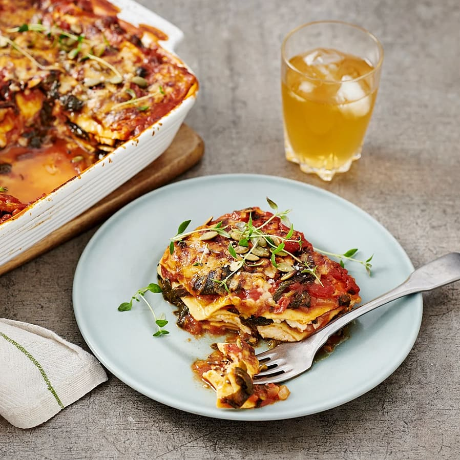

This is an awesome vego lasagna made of halloumi and pumpkin seeds.
It's an easy recipe with a few other things such as spinach and crusched tomatoes.

Ingredients
1 yellow onion
1 garlic
1 msk rapsolja
1 pack of fresh lasagna
3 msk concentrated paste made from tomatoes
500 g crushed tomatoes
1 tsk liquid honey
2 vegetable broth
2 msk chopped thyme
4 dl water
200 g frozen spinach
2 halloumi a 200g
1 1/2 dl sliced cheese
Steps
Set the oven to 225 degrees celsius.
Cut and chop the onions, fry for 3 minutes.
Add the crushed tomatoes, paste of tomatoe, honey, broth, thyme and water.
Boil without a lid for 5 minutes. Add the spinach and boil for another 5 min. Taste with salt and peppar.
Cut the halloumi cheese into thin slices.
Add a layer of the tomatoe sause, then the lasagna followed by the a halloumi and some sprinkled pumpkin seeds on top. Repeat this proccess until finished.
Put in the middle off the oven for 20 minutes, finish with some sliced cheese on top.